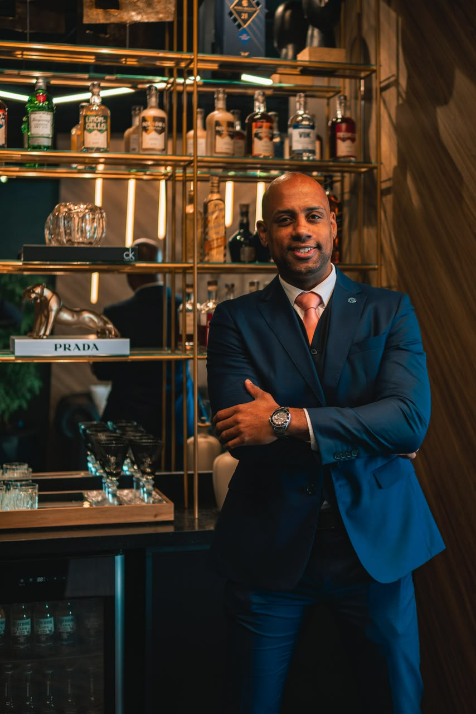
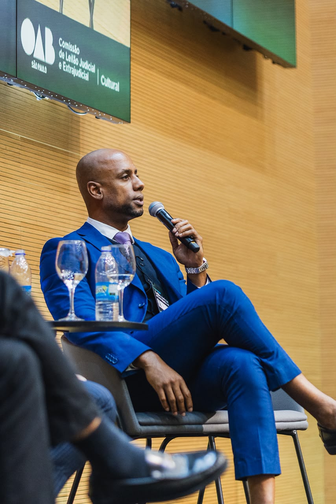
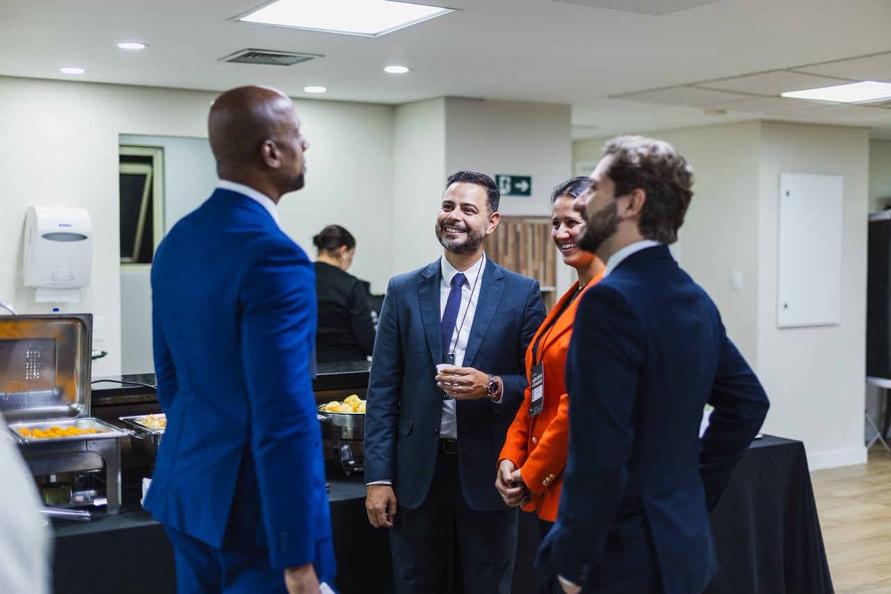

Due diligence especializada em veículos
Análise rigorosa de passivos judiciais, bloqueios administrativos (RENAJUD), penhoras, débitos tributários e gravames bancários que incidem sobre veículos de leilão.
Quem está por trás da curadoria
Advogado especialista em leilões judiciais, consultor em arrematações e referência institucional no setor de leilões de veículos.
No mercado de leilões de veículos, a rentabilidade anda de mãos dadas com a segurança jurídica. Para garantir que nossos investidores operem com total transparência, conformidade e minimização de riscos, nossa plataforma conta com a expertise e a liderança técnica do Dr. Rubens Filippe de Jesus.

Com uma sólida e reconhecida carreira na advocacia especializada, o Dr. Rubens dedica sua atuação à estruturação e à análise preventiva de operações no mercado de alienações judiciais e extrajudiciais.
Análise rigorosa de passivos judiciais, bloqueios administrativos (RENAJUD), penhoras, débitos tributários e gravames bancários que incidem sobre veículos de leilão.
Desenvolvimento de pareceres de risco e de viabilidade jurídica para arrematações de pequeno, médio e grande porte.
Atuação ágil junto aos tribunais e órgãos de trânsito para expedição de cartas de arrematação, baixas de restrições e regularização documental dos bens apregoados.
Além da prática advocatícia, o Dr. Rubens tem papel ativo no desenvolvimento e no aprimoramento regulatório do mercado de leilões no Brasil, com destaque para sua atuação na Ordem dos Advogados do Brasil – Seção São Paulo.

Membro ativo e incentivador do fortalecimento do ecossistema de leilões, promovendo debates sobre segurança jurídica, boas práticas e modernização das arrematações.
Protagonizou a idealização e a realização do evento pioneiro promovido pela Comissão Especial de Leilões, que reuniu magistrados, leiloeiros, advogados e grandes investidores para debater o futuro do setor.
A presença e a curadoria do Dr. Rubens garantem que a busca e a seleção de veículos na plataforma não sejam apenas sobre oportunidades de preço, mas sobre investimentos sólidos e estruturados.

A arrematação de veículos só se torna um grande negócio quando acompanhada de rigor técnico e respaldo jurídico. Nosso compromisso é entregar a inteligência e a segurança necessárias para que o investidor foque no que importa: o seu retorno.
Antes do lance, fale com o Rubens: análise do edital, débitos, restrições e o custo total real da operação.